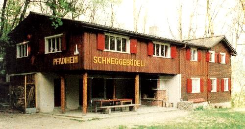

Unser Pfadiheim steht auf einem geschichtsträchtigen Hügel am Rand von Buchs. Es ist rundum von Wald umgeben und bietet genug Platz für 34 Personen.
Für die Verwaltung useres Heims ist die Heimbetriebskommission verantwortlich, für weitere Informationen:
Andreas Tinner v/o Turbo
Tel: 081 740 41 92